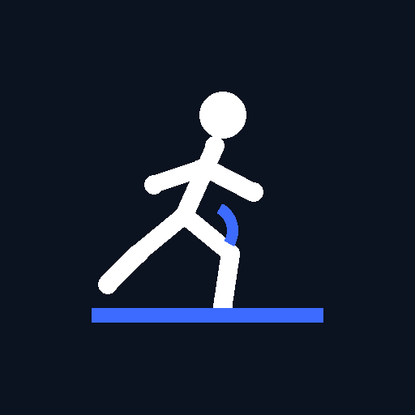
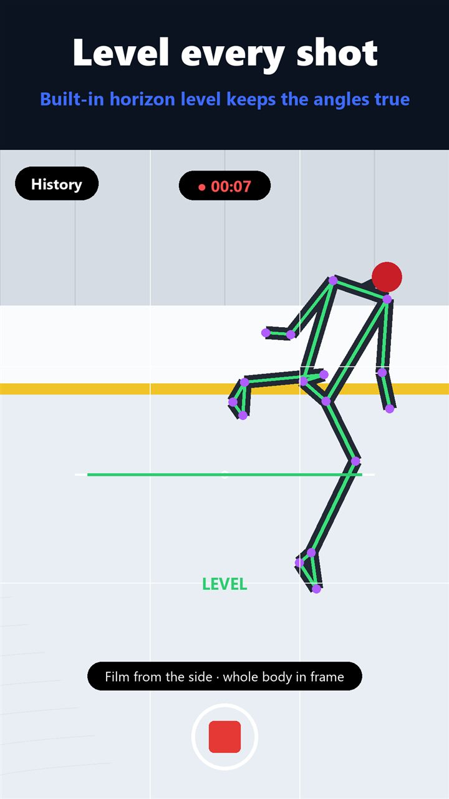
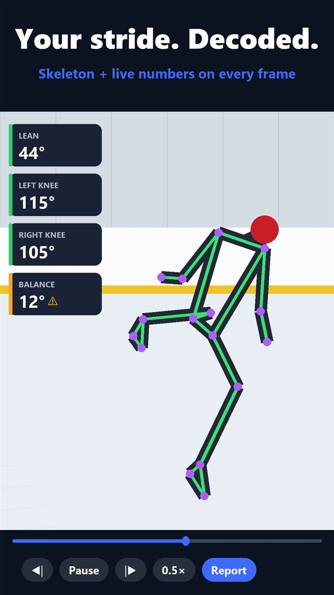
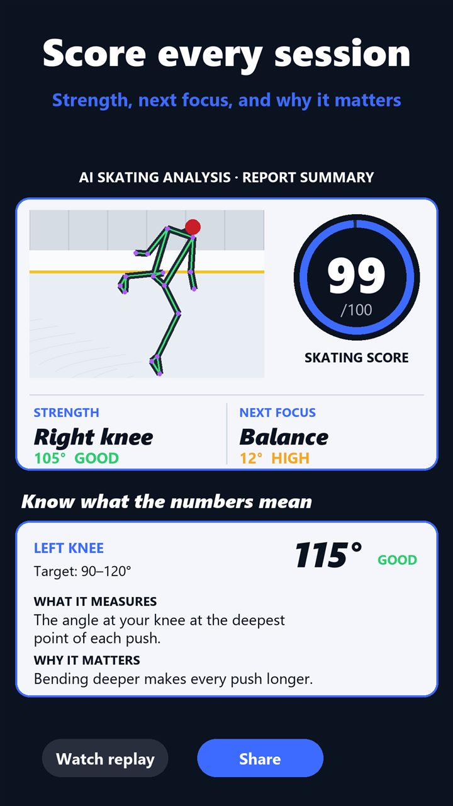

FullRink apps / analytic cam

analytic cam
Skating technique, measured on your phone
analytic cam records a skating clip with an on-screen horizon level, then analyses it on the phone with pose tracking. The replay shows a skeleton with live lean, left-knee, right-knee and balance cards, followed by a scored report. Record at 240 or 120 fps for slow-motion detail, or import a clip from the gallery.
In testing on Google Play (package th.co.aftershoot.analyticcam).
What it does
- On-device pose tracking, no upload needed
- Live lean, knee-angle and balance readouts on the replay
- Scored technique report after each clip
- Slow-motion capture at 240 or 120 fps on supported phones
- Import existing clips from the gallery
- Export the replay with the skeleton overlay as a video
Screens



Questions about analytic cam?
Tell us what your rink needs, or ask to join the test.